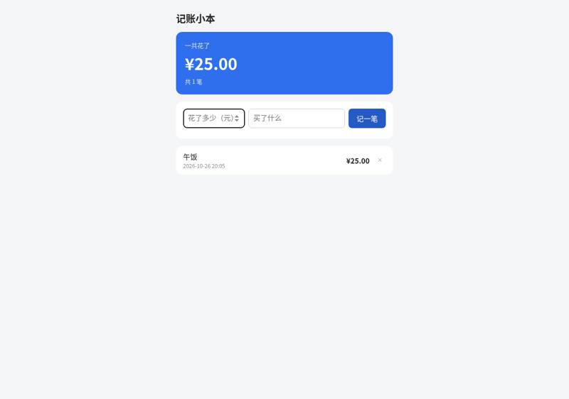
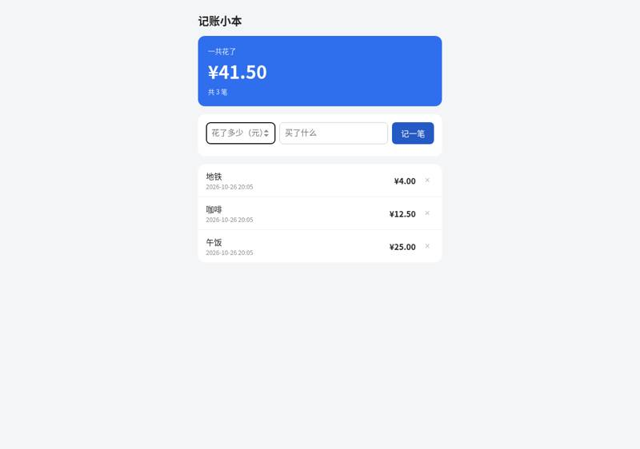
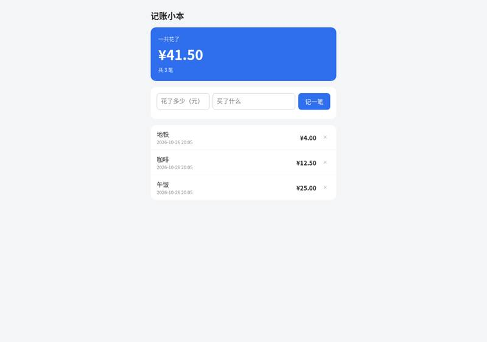
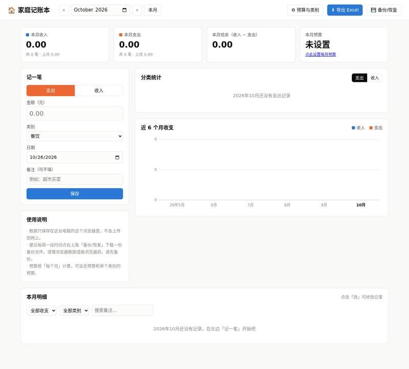
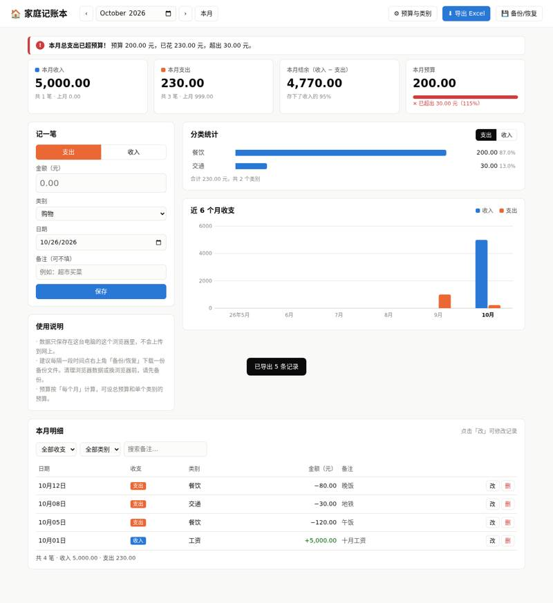

Control: Claude Code with no tool: vibe coding test
Installed from its README in a throwaway sandbox, then used by Claude Code (Claude Opus 5.5) to build two apps from requests written the way someone who cannot code would write them. Whenever the build stopped to ask a question or for approval, it got the same reply. A separate tester session, with no tool loaded, opened each app in a browser and ran the checks; we went through every screenshot. All results · The task · The tester's checks
One sentence: an expense page
The request, word for word: 帮我做一个记账小网页：每次花钱记一笔（花了多少、买了什么），页面上能看到一共花了多少，关掉浏览器再打开，记录还在。
Ran: all 4 checks passed. Opens: double-click. Built in 0.8 minutes (limit 30); it stopped to ask 0 time(s); how it ended: finished. Usage at API prices: $0.17 (1.0 times the run with no tool). Packages: none (plain HTML, CSS and JavaScript).
| Check | Verdict | What the tester saw | Screenshot |
|---|---|---|---|
| opens | pass | file:// page shows: 记账小本 | 一共花了 | ¥0.00 | 共 0 笔 | 记一笔 | 还没有记录，在上面记下第一笔吧 | |
| records an expense | pass | list text after adding: 记账小本 | 一共花了 | ¥25.00 | 共 1 笔 | 记一笔 | 午饭 | 2026-10-26 20:05 | ¥25.00 | × |  |
| total is right | pass | total shown: ¥41.50; page: 记账小本 | 一共花了 | ¥41.50 | 共 3 笔 | 记一笔 | 地铁 | 2026-10-26 20:05 | ¥4.00 | × | 咖啡 | 2026-10-26 20:05 | ¥12.50 | × | 午饭 | 2026-10-26 20:05 | ¥25.00 | × |  |
| still there after closing and reopening | pass | after reopen total ¥41.50; page: 记账小本 | 一共花了 | ¥41.50 | 共 3 笔 | 记一笔 | 地铁 | 2026-10-26 20:05 | ¥4.00 | × | 咖啡 | 2026-10-26 20:05 | ¥12.50 | × | 午饭 | 2026-10-26 20:05 | ¥25.00 | × |  |


Where it stopped, and got the reply 「我不懂这些，你按你推荐的来，继续做。」
- It did not stop to ask.
One paragraph: a family ledger
The request, word for word: 做一个家庭记账本网页：能记收入和支出（金额、类别、日期、备注），能按月看收入、支出和结余，能看每个类别花了多少（最好有图），可以设每月预算、超了要提醒，还能把记录导出成 Excel 表格。数据存在我电脑上就行。
Ran: all 8 checks passed. Opens: double-click. Built in 4.2 minutes (limit 45); it stopped to ask 0 time(s); how it ended: finished. Usage at API prices: $1.03 (1.0 times the run with no tool). Packages: none (plain HTML, CSS and JavaScript).
| Check | Verdict | What the tester saw | Screenshot |
|---|---|---|---|
| opens | pass | file:// page shows: 🏠 家庭记账本 | ‹ | › | 本月 | ⚙ 预算与类别 | ⬇ 导出 Excel | 💾 备份/恢复 | 本月收入 | 0.00 | 共 0 笔 · 上月 0.00 | 本月支出 | 0.00 | 共 0 笔 · 上月 0.00 | 本月结余（收入 − 支出） | 0.00 | 本月预算 | 未设 |  |
| records income and expenses | pass | 本月明细 shows: 本月明细 | 点击「改」可修改记录 | 全部收支 | 只看支出 | 只看收入 | 全部类别 | 工资 | 餐饮 | 交通 | 日期 收支 类别 金额（元） 备注 | 10月12日 支出 餐饮 −80.00 晚饭 改 删 | 10月08日 支出 交通 −30.00 地铁 改 删 | 10月05日 支出 餐饮 −120.00 午饭 改 删 | 10月01日 收入 工资 +5,000.00 十月工资 改 删 | 共 4 笔 · 收入 5,000.00 · 支出 230.00 | 已记下：支出 80.00 元 |  |
| month's income, spending and balance | pass | income/expense/balance = ('5000.00', '230.00', '4770.00') | |
| spending by category | pass | 分类统计 shows: 分类统计 | 支出 | 收入 | 餐饮 | 200.0087.0% | 交通 | 30.0013.0% | 合计 230.00 元，共 2 个类别 | | |
| switches between months | pass | Sept: income/expense/balance=('0.00', '999.00', '-999.00'), list has 999: True; back to Oct: ('5000.00', '230.00', '4770.00') | |
| warns over budget | pass | 预算 card: 本月预算 | 200.00 | ✕ 已超出 30.00 元（115%） | ; other warning text: ✕ 已超出 30.00 元（115%）; 本月总支出已超预算！预算 200.00 元，已花 230.00 元，超出 30.00 元。 | |
| exports a spreadsheet | pass | Downloaded 家庭账本_全部.xlsx (a real .xlsx, scope 全部). It has 3 sheets: 收支明细, 月度汇总, 类别汇总. 收支明细 has all 5 records with numeric amounts: 2026-09-15 支出 购物 999 九月购物; 2026-10-01 收入 工资 5000 十月工资; 2026-10-05 支出 餐饮 120 午饭; 2026-10-08 支出 交通 30 地铁; 2026-10-12 支出 餐饮 80 晚饭. Totals: income 5000, expenses 1229, balance 3771. 月度汇总: 2026-10 → 5000/230/4770. |  |
| still there after closing and reopening | pass | after restart Oct income/expense/balance=('5000.00', '230.00', '4770.00'), Oct list has 5000/120/30/80: True; Sept list has 999: True |


Where it stopped, and got the reply 「我不懂这些，你按你推荐的来，继续做。」
- It did not stop to ask.